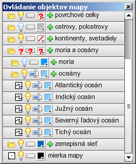

plávajúce okno Ovládanie objektov mapy
Ovládanie objektov mapy
Na ovládanie viditeľnosti a farebnosti objektov a viditeľnosti značiek v mape slúži samostatné plávajúce okno. Otvára sa automaticky pri načítaní mapy a počas práce s mapu je možné ho ľubovoľne otvoriť a zatvoriť tlačidlom v lište mapového okna. Veľkosť okna je možné si prispôsobiť podľa potreby. Položky v okne je možné posúvať pomocou vertikálneho scrollbaru alebo kolieskom myši.
Všetky objekty v mape sú zoradené do hierarchického stromu objektov, pričom objekty rovnakého typu sú logicky združené do skupín. Každej skupine alebo objektu zodpovedá jeden riadok v strome s ikonami zobrazujúcimi aktuálny stav a názvom položky.
V strome objektov sú tri druhy položiek:
položka stromu Skupina objektov
Skupina objektov
Môže obsahovať iné skupiny alebo samostatné objekty. Obsahuje tieto ikony a prvky:
- alebo - kliknutím otvára/zatvára túto skupinu.
- alebo - všetky objekty v celom podstrome sú viditeľné resp. skryté. Kliknutím sa zmení naraz viditeľnosť všetkých objektov v podstrome. Pokiaľ sú niektoré objekty v podstrome viditeľné a niektoré skryté, zobrazí sa ikona . V takom prípade po kliknutí na ikonu sa všetky objekty v podstrome zobrazia.
- alebo - všetky značky v celom podstrome sú viditeľné resp. skryté. Kliknutím sa zmení naraz viditeľnosť všetkých značiek v podstrome. Pokiaľ sú niektoré značky v podstrome viditeľné a niektoré skryté, zobrazí sa ikona . V takom prípade po kliknutí na ikonu sa všetky značky v podstrome zobrazia.
- - slúži na výber farby objektov v celom podstrome. U niektorých typov plošných objektov (napr. štátov) je možné zvoliť si
 . V takom prípade je objekt zobrazený len ako obrys, ktorého farbu nie je možné meniť. Pokiaľ majú objekty v podstrome rôzne farby alebo sú bez výplne len niektoré, zobrazí sa ikona .
. V takom prípade je objekt zobrazený len ako obrys, ktorého farbu nie je možné meniť. Pokiaľ majú objekty v podstrome rôzne farby alebo sú bez výplne len niektoré, zobrazí sa ikona . - - ako poslednú položku v tejto skupine pridá užívateľskú značku. Značka sa objaví v ľavom hornom rohu mapy, odkiaľ môže byť presunutá a upravená.
položka stromu Objekt
Objekt
Predstavuje ovládanie konkrétneho objektu v mape. Obsahuje tieto ikony a prvky:
- - zobrazuje typ objektu. Je rovnaký ako symbol značky v mape a nie je možné ho meniť.
- alebo - kliknutím sa zmení viditeľnosť objektu. Zároveň sa príslušne upraví ikona všetkých nadradených skupín.
- alebo - kliknutím sa zmení viditeľnosť značky objektu. Zároveň sa príslušne upraví ikona všetkých nadradených skupín
- - slúži na výber farby objektu. U niektorých typov plošných objektov (napr. štátov) je možné zvoliť si . V takom prípade je objekt zobrazený len ako obrys, ktorého farbu nie je možné meniť.
- - preddefinovaný názov objektu, ktorý nie je možné meniť. V novej mape je rovnaký ako popiska značky v mape, ktorú je ale možné zmeniť.
položka stromu Užívateľská značka
Užívateľská značka
Po pridaní vlastnej značky do skupiny objektov sa zobrazí táto položka ako posledná vo zvolenej skupine. Užívateľská značka nepatrí k žiadnemu objektu. Značka sa objaví v ľavom hornom rohu mapy, odkiaľ môže byť presunutá a upravená. Obsahuje tieto ikony a prvky:
- - zobrazuje typ značky a zvolí sa automaticky podľa zložky, do ktorej bola užívateľská značka pridaná. Je rovnaký ako symbol značky v mape a nie je možné ho meniť.
- - vymaže túto značku z mapy aj zo stromu objektov
- alebo - kliknutím sa zmení viditeľnosť značky objektu. Zároveň sa príslušne upraví ikona všetkých nadradených skupín
- - preddefinovaný názov "vlastná popiska", ktorý nie je možné meniť. Je rovnaký ako popiska objektu v mape, ktorú je ale možné zmeniť.